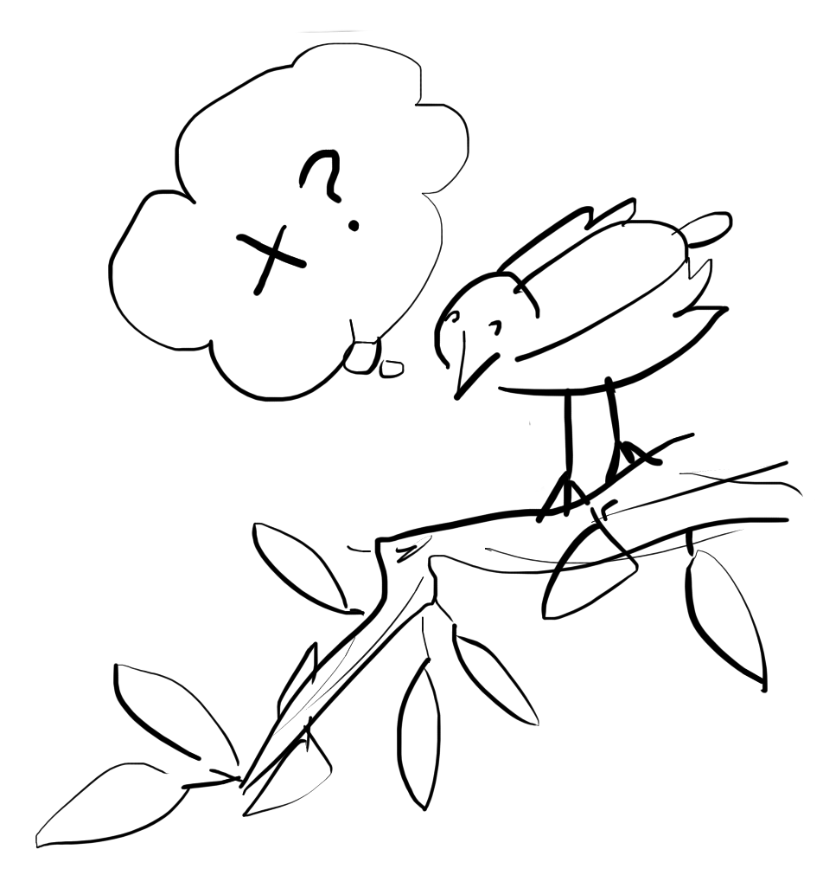

 Oggi in fila alla cassa del supermercato c'era, dietro di me, quella che ad ogni apparenza si giudica come una famigliola felice. Mamma e papà nei loro rigogliosi quaranta, abbronzati e in forma; due bambine, di cui ricordo la magrezza e la vivacità, ai lati del carrello, ripieno fino all'orlo. Una di loro gironzolava qua e là tra le corsie, attratta dai colori brillanti delle confezioni di cioccolata e caramelle, che riportava speranzosa verso il carrello rivolgendo lamenti e preghiere ai due grandi. In tutto ciò portava la mascherina legata al gomito, e non sul volto come il resto dei familiari, e tutte le altre persone presenti tipo me. Ho aspettato invano che qualcuno, a cominciare dai suoi genitori, dicesse qualcosa, anche solo del tipo ora, vicino alle casse, rimetti la mascherina. Ma nulla. Io ero senza carrello, mi serviva solo una manciata di cose ma avevo appunto le mani piene, per cui quando ho accennato una sorta di gesto goffo, indicando la mia mascherina alla bimba, non ho ricevuto attenzione. In verità ero combatutto tra l'andare fino in fondo, rischiando di essere pesante, e continuare il mio ragionamento in pace e solitudine. Ho evidentemente scelto la seconda opzione.
Ho ripensato a mia nonna Carla. Nonna è morta qualche anno fa, niente a che vedere con il Covid-19. Fumatrice da che me la ricordo, da piccolo l'ho praticamente conosciuta con una nuvola in testa. Le andavo a comprare il suo pacchetto di Philip Morris Multifilter blu al bar vicino casa, e magari ci usciva anche un gelato per me. Le cose sono poi molto cambiate, la sua salute è peggiorata e la giornata non era più scandita dalle sigarette, ma dalle pasticche da prendere. Vivevo a Roma e ormai ci incontravamo ogni tanto, quando facevo pausa dall'università e tornavo al paese. Dopo un brusco peggioramento di salute la ritrovai in ospedale con una maschera di plastica sulla faccia, e sentii subito sulla pelle che era l'ultima volta che l'avrei vista. Già prima di entrare in quello stanzone verdastro, suddiviso in spazi quadrati da niente più che tende, sentivo un coro confuso di lamenti, un tappeto sonoro straziante da cui ogni tanto si sollevavano urla disperate e richiami inesaudibili. Camminavo cercando il quadrato giusto, il suo, ma più ne vedevo più mi rassegnavo alla realtà: c'era sempre la stessa sofferenza lì dentro. Non avrei trovato niente di meglio né niente di peggio nel quadrato giusto. Solo una faccia più conosciuta delle altre.
E così è stato, più o meno. Certo ho riconosciuto mia nonna, sapevo che era lei dietro quel mascherone che le cingeva il volto, ma che fosse la lei delle altre volte, questo no. Il suo respiro combatteva, doveva succhiare fino all'ultima molecola di ossigeno per restare a galla. I suoi occhi cercavano, cercavano senza tregua in quel soffitto e anche oltre, senza trovare una risposta. Mi riconobbe e parlammo un po', poi cominciò a dire cose senza logica, mi faceva richieste irrealizzabili a cui non riuscivo, e ci ho provato, a trovare risposte confortanti. Alzava la voce, quasi gridava e piangeva senza versare lacrime, e al contrario io mi facevo piccolo, perdevo la parola e il mio sguardo si fissava sul suo. Era l'unica cosa che mi riusciva di fare. Restai ancora un po' per assecondarla e ricordo vividissima l'impotenza di quel momento, la sensazione che "le cose stanno così e basta" e che nessuna vita, di nessun genere, le cambierà mai. Mia nonna non si è ammalata di Covid-19, ma se nella mia ignoranza riesco ad intuire cosa significhino insufficienza polmonare e terapia semi-intensiva, allora riesco ad immaginare a cosa somiglino le ultime ore di sofferenza di tante persone, e specialmente anziane, che sono morte in questi mesi, e che continuano a morire. In quel momento, in fila al supermercato con la bambina che mi girava intorno, ho contemplato l'idea di esordire un discorso chiedendole: ce l'hai dei nonni?...
Non era tanto volere che mettesse la mascherina. In realtà detestavo la sua noncuranza ed il suo egoismo. Era cieca a qualsiasi forma di dolore e per questo mi sembrava stupida, o forse era l'invidia a farmi pensare queste cose. Guardandomi intorno ho pensato che parlare non avrebbe portato a nulla di buono. Vedevo lo stesso tipo di stupidità negli altri familiari, solo più domato, meno spudorato, ma forse addirittura più convinto. Pochi minuti prima un addetto del supermercato aveva chiesto ai clienti in fila per le casse di distanziarsi di un metro. Beh, il loro carrello, spinto da dietro dalla mamma e tirato da davanti dal papà, stava quasi appoggiato alle mie natiche, con lui che praticamente mi affiancava. Ogni volta che riuscivo a fare un passo in avanti, cercando la distanza media tra chi mi precedeva e loro, subito mi tallonavano e riducevano quella distanza a zero. Così ho volutamente aspettato che chi mi precedeva lasciasse un grande spazio tra noi, di almeno due metri, ho fatto un rigido passo in avanti, cercando di comunicare qualcosa col corpo, ma nuovamente riecco il padre alle mie spalle e il carrello quasi nel culo, e la bimba che in tutto ciò se la passeggiava felice e senza mascherina. Ho sbagliato a lasciar perdere? Non è litigare che mi spaventa. Mi chiedo solo che frutti avremmo tratto, io e loro, nell'affrontare la questione a parole, e ho momentaneamente concluso che non volevo prendermi questa responsabilità. Portare la morte nei ragionamenti altrui non si fa proprio a cuor leggero, ecco. Loro stavano scegliendo di non pensarci, mentre io facevo una scelta diversa. Esiste una ragione ed un torto in questo? Ma se avessi parlato, avrei in una certa misura violentato la loro scelta, gli avrei impedito di continuare a non pensarci e tendenzialmente con queste premesse non si comunica più tanto bene.
Lo stesso quesito, mutato in alcuni dettagli forse fondamentali, si può porre durante il rapporto di insegnamento uno a uno. Le ripetizioni, sì. Può sorgere nel corso della storia tra insegnante e studente, che io non considero come categorie fisse ma come cappelli da mettere e togliere, in quanto ci si insegna reciprocamente e si studia entrambi per tutto il tempo. Capita che ad un certo punto c'è uno scoglio, ed indicarlo esplicitamente solleverebbe una questione profonda e radicata. Non una questione esplicitamente legata alla materia studiata, ma qualcosa di personale. Ci si chiede se sia fruttuoso parlare, se l'altro lo possa accettare e trasformare in qualcos'altro, rispondendo magari anche con uno scontro, non essendo d'accordo ma comunque ponendosi dinamicamente rispetto al problema. Una delle differenze in questo caso sta nella richiesta esplicita: lo studente pagante vuole le ripetizioni, le richiede e le paga, dunque potrei ipotizzare una maggiore libertà nel proporgli discorsi che, secondo me, migliorerebbero il suo rapporto con lo studio, sia direttamente sia di riflesso. Ma non è così semplice. Chi chiede potrebbe limitarsi a pensare di volere un voto sufficiente a scuola, e parlargli della sua dipendenza dai genitori, per dirne una, che gli impedisce di capire la matematica, sarebbe completamente al di là delle sue aspettative, in maniera simile ad una bimba che tra un kinder e una fruittella si vede evocare i nonni malati e sofferenti. Gli scogli educativi ci portano in quella zona del mare del pensiero in cui le correnti mutano rapidissimamente e anche una piccola deviazione di rotta porta a conseguenze radicalmente diverse.
Ribadisco che secondo me c'è una completa simmetria in ciò, nonostante le ovvie diversità tra insegnante e studente come ruoli sociali. Al raggiungimento dello scoglio i ruoli non contano ormai più, e si ha sempre entrambi qualcosa da poter dire, da poter fare, generando esiti inaspettati nella relazione. Ricordo di essermi accanito per mesi su M, cercando una via d'insegnamento che funzionasse per entrambi. A tratti pensavo di indicargli lo scoglio ma infine ho capito che lo scoglio era il mio, nel trattarlo come avrei trattato me stesso. Non stavo guardando alla nostra profonda diversità. Lui aveva bisogno di seguire una strada che io non conoscevo, una strada che non imboccherei mai perché non mi corrisponde. Scommetto che provava ad indicarmelo di tanto in tanto, magari non troppo esplicitamente, ma ho la sensazione di essere stato io il cieco tra i due, e nonostante le pene di tante ore spese a cercare una soluzione che non potevo vedere, almeno è infine arrivata una separazione giusta e produttiva per entrambi. Ma sarebbe anche potuta finire in un dimenticatoio indefinito, dove teniamo quelle esperienze mai veramente chiuse, di cui non riusciamo a delineare un senso, in cui abbiamo navigato ignari, tra gli scogli che ci rallentavano e bloccavano nel cammino.
Parlando di insegnamento, negli ultimi anni si è discusso molto di autovalutazione e della consapevolezza di sé nella relazione educativa. Mettersi i voti da soli, per dirla molto brevemente, aiuterebbe i ragazzi a capire più di sé e di quello che gli viene chiesto di fare. In effetti è assurdo cercare di far bene qualcosa, senza sapere che bene s'intenda. Ora, se fossi onesto, qui servirebbe un ampio approfondimento per far giustizia alla questione, ma prenderò la scorciatoia e offrirò solo un mio punto di vista, forse limitato. Per quanto mi piaccia questa spinta in direzione di una simmetria tra chi insegna e chi impara, essa potrebbe assumere l'aspetto di un proverbiale dito dietro cui nascondere dinamiche molto più importanti. Intanto puntualizzo che i voti veri, molto spesso, è sempre l'insegnante a deciderli. Pochi si spingerebbero fino in fondo con coraggio, e lascerebbero agli studenti la valutazione, ad esempio, di una propria eventuale bocciatura o un rimando a Settembre. Per quasi tutti è un'eresia, forse per qualcuno è una realtà ma comunque da custodire lontano da occhi ed orecchie di insospettabili inquisitori. Il vero guadagno dato da un avvicinamento di questo tipo è proprio nella dinamicità della relazione: riutilizzando la metafora dello scoglio, valutarsi e ragionare su di sé può effettivamente ammorbidirci e renderci più attenti alle indicazioni altrui, più capaci di ascoltarle. Di conseguenza, quando emergerà qualcosa in noi e l'altra persona si chiederà se è il caso di indicarlo o meno, la loro scelta sarà più semplice. Arrivo addirittura a dire che cresceranno la rapidità e l'intensità con cui si incontrano questi ostacoli, essendo la relazione più agile ma non per questo più leggera, anzi. Il vero nodo della questione è che un'educazione totale, che si fondi sullo smuovere ciò che ci impedisce e ci trattiene profondamente, è impegnativa e spesso vista come un rischio. La nostra società non si fonda su questo genere di rischio, sul toccarsi in profondità e accettare di vedere che succede. A scuola si va ad imparare le cose e soprattutto la disciplina che ci tiene seduti al banco per cinque e più ore - magari nei fatti non è così, ma nella testa di molti genitori sì, tanto che a volte non sono sufficienti i carcerieri scolastici: se ne cercano altri nell'istruttore di nuoto, nel prete della parocchia, nel prof di ripetizioni di greco, eccetera.
Scuola o non scuola, essere esistenzialmente pronti a pizzicare queste corde profonde è la vera questione, che si riapplica immutata in ogni ambito della vita, in ogni secondo che misuriamo con la coscienza, dalla fila fatta al supermercato fin dentro l'abbraccio di due amanti sconosciuti. È una disposizione d'animo così forte, che anche solo puntare ad ottenerla mi porta a guardarmi intorno e a vedere rimpicciolirsi, sempre più lontane ed insignificanti, cose come i voti scolastici, il verbo dovere, l'attaccamento agli oggetti, le guerre di opinione e di religione. Invece spiegare qualcosa a qualcuno, portarlo per mano verso il momento di realizzazione dell'ecco, ho capito! è una cosa che si ingigantisce e diventa così gustosa e valida da candidarsi come possibile senso della vita. Il palleggio creato da due o più che giocano a spiegare e farsi spiegare è come un reciproco sollevarsi, in cui però nessuno resta in basso. Tutti si sale ed è un gioco a somma positiva, difatti al guadagno dell'altro non deve corrispondere una perdita dell'uno, anzi spesso la crescita è immediata e potenzialmente duratura per tutti. Forse la difficoltà più grande è riconoscere la disponibilità propria e degli altri a questo tipo di confronto senza sconti. Tornando alla questione iniziale, mi sarebbe occorsa una grande sensibilità e affetto umano per tirare il filo al punto giusto con la bambina. Oggi ho fallito senza neanche tentare ma dovrò farci qualcosa: accettare il rischio per primi è probabilmente l'unico modo di farsi riconoscere e dare il via alla partita.
matteodelprete91@gmail.com Hosted with Github Pages